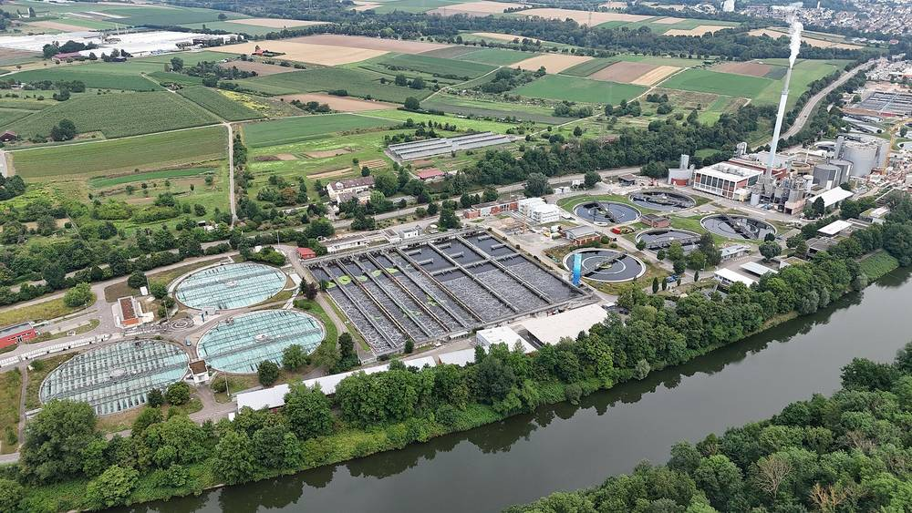

독일 슈투트가르트 시, 하수처리장 반응조 위에 2,745kWp '접히는 태양광 지붕' 짓는다…완공되면 독일 최대, 2027년 2분기 첫 발전 예정

모듈 5,280장으로 1만7,493㎡ 덮고 강철 케이블에 매달아 모터 120대로 눈·강풍·우박 때와 밤에 접어…해마다 220만kWh 넘게 만들어 처리장 전력의 약 9% 자가소비 예상
독일 슈투트가르트 시가 중앙 하수처리장 슈투트가르트-뮐하우젠(Hauptklärwerk Stuttgart-Mühlhausen)의 생물 처리 반응조 위에 접었다 펼 수 있는 태양광 지붕을 짓고 있다. 모듈 5,280장이 1만7,493㎡를 덮는 설비 용량 2,745kWp 규모로, 완공되면 독일에서 가장 큰 접이식 태양광 지붕이자 시 안에서 가장 큰 태양광 설비가 된다. 모듈은 120개 묶음으로 나뉘어 강철 케이블에 매달리고 모터 120대로 움직이며, 눈·강풍·우박이 올 때와 밤에는 접어 둔다. 구조물이 반응조 약 5m 위에 올라가 처리장을 돌리는 동안에도 정비할 수 있으며, 2025년 철거와 반응조 개조에 이어 2026년 6월부터 강철 약 250톤을 들인 구조물과 모듈을 설치하고 있다. 시는 2026/27년 겨울 계통 연결을 거쳐 2027년 2분기에 첫 발전을 할 것으로 보고, 해마다 220만kWh 넘는 전기를 만들어 시의 손꼽히는 전기 소비처인 처리장 수요의 약 9%를 현장에서 쓸 계획인데 특히 생물 처리용 송풍기가 전기를 많이 먹는다. 위르겐 무츠(Jürgen Mutz) 시 토목국장은 이 지붕이 그저 큰 태양광 설비가 아니라 기존 기반시설 위에 세운 똑똑한 해법이라고 말했다.
시민에너지 관점
땅을 새로 쓰지 않고 하수처리장 반응조 위 1만7,493㎡를 발전소로 바꾸는 방식은, 도시에 이미 있는 공공 기반시설이 가장 큰 태양광 부지가 될 수 있다는 점을 보여 준다. 처리장 운영과 정비를 방해한다는 우려는 5m 높이에 올리고 궂은 날씨에 접는 구조로 풀었다. 다만 이 설비는 시가 짓고 시가 쓰는 공공 사업이어서 시민이 소유에 참여하는 길은 보이지 않는데, 덴마크에서는 많은 도시의 지역난방을 이용자들이 함께 소유하는 소비자 협동조합이 맡아 기반시설의 이익과 결정권이 주민에게 돌아간다. 국내 하수처리장·정수장·공공 주차장 위 공간도 지자체 혼자 쓰고 끝낼 것이 아니라, 주민 출자를 함께 받아 공공과 시민이 공동 소유하는 발전소로 설계해야 한다.
출처: pv magazine Deutschland 2026-11-02 Sandra Enkhardt 원문 보기
출처: t-online 2026-11-01 기자 미표기 원문 보기
창간 전 시험 발행 기사입니다.
独シュトゥットガルト市、下水処理場の反応槽の上に2,745kWpの「折りたためる太陽光屋根」を建設…完成すればドイツ最大、2027年第2四半期に初発電の予定
モジュール5,280枚で1万7,493㎡を覆い、鋼索につり下げてモーター120台で雪・強風・ひょうの時と夜間に折りたたむ…年220万kWh超を発電し処理場電力の約9%を自家消費の見込み
ドイツのシュトゥットガルト市が、中央下水処理場シュトゥットガルト＝ミュールハウゼン（Hauptklärwerk Stuttgart-Mühlhausen）の生物処理反応槽の上に、折りたたんだり広げたりできる太陽光屋根を建設している。モジュール5,280枚が1万7,493㎡を覆う設備容量2,745kWpの規模で、完成すればドイツ最大の折りたたみ式太陽光屋根となり、市内でも最大の太陽光設備となる。モジュールは120のグループに分かれて鋼索につり下げられ、120台のモーターで動き、雪・強風・ひょうの時や夜間には折りたたまれる。構造物は反応槽の約5m上にあり、処理場を稼働させながら保守作業ができるようになっており、2025年の撤去・反応槽の改修に続き、2026年6月から約250トンの鋼材を使った構造物とモジュールの設置が進んでいる。市は2026/27年の冬に系統へ接続し、2027年第2四半期に初めて発電する見通しで、年220万kWh超の電力を生み、市内有数の電力消費施設である処理場の需要の約9%を現地でまかなう計画だ。特に生物処理用の送風機が多くの電力を使う。ユルゲン・ムッツ（Jürgen Mutz）市土木局長は、この屋根は単なる大きな太陽光設備ではなく、既存のインフラの上に築いた賢い解決策だと述べた。
市民エネルギーの視点
新たな土地を使わず、下水処理場の反応槽の上の1万7,493㎡を発電所に変えるやり方は、都市にすでにある公共インフラが最大の太陽光用地になりうることを示している。処理場の運転や保守の妨げになるという懸念は、5mの高さに設置し悪天候時に折りたたむ構造で解決した。ただしこの設備は市が建てて市が使う公共事業であり、市民が所有に加わる道は見えない。デンマークでは多くの都市の地域暖房を利用者が共同で所有する消費者協同組合が担い、インフラの利益と決定権が住民に戻っている。韓国の下水処理場や浄水場、公共駐車場の上の空間も、自治体が単独で使って終わるのではなく、住民の出資も受け入れて公共と市民が共同で所有する発電所として設計すべきだ。
出典: pv magazine ドイツ版 2026-11-02 ザンドラ・エンクハルト 原文を読む
出典: t-online 2026-11-01 記者名なし 原文を読む
創刊前の試験発行記事です。
德国斯图加特市在污水处理厂反应池上方建造2,745kWp"可折叠光伏屋顶"…建成后为德国最大，预计2027年第二季度首次发电
5,280块组件覆盖1.7493万平方米，悬挂在钢索上由120台电机驱动，遇雪、强风、冰雹及夜间收起…预计每年发电220万千瓦时以上，约满足处理厂9%的用电并自发自用
德国斯图加特市正在中央污水处理厂斯图加特-米尔豪森（Hauptklärwerk Stuttgart-Mühlhausen）的生物处理反应池上方，建造一座可以收起和展开的光伏屋顶。该设施由5,280块组件覆盖1.7493万平方米，装机容量2,745kWp，建成后将成为德国最大的折叠式光伏屋顶，也是市内最大的光伏设施。组件分为120组，悬挂在钢索上，由120台电机驱动，遇到降雪、强风、冰雹以及夜间时收起。结构位于反应池上方约5米处，处理厂运行期间也能进行维护；继2025年拆除和反应池改造之后，自2026年6月起正在安装使用约250吨钢材的结构和组件。市政府预计2026/27年冬季并网，2027年第二季度首次发电，每年发电220万千瓦时以上，就地满足这座全市主要用电大户约9%的用电需求，其中生物处理用的鼓风机耗电尤其多。斯图加特市土木工程局局长于尔根·穆茨（Jürgen Mutz）表示，这一屋顶不只是一座大型光伏设施，而是建在现有基础设施上的聪明方案。
市民能源视角
不占用新土地，而把污水处理厂反应池上方的1.7493万平方米变成发电站，这说明城市里已有的公共基础设施可以成为最大的光伏用地。有人担心会妨碍处理厂运行和维护，这一问题通过架高5米、恶劣天气时收起的结构得到了解决。不过这是由市政府建设、市政府使用的公共项目，看不到市民参与所有权的途径。在丹麦，许多城市的区域供热由用户共同拥有的消费者合作社承担，基础设施的收益和决策权回到了居民手中。韩国污水处理厂、净水厂和公共停车场上方的空间也不应只由地方政府独自使用，而应同时吸收居民出资，设计成公共部门与市民共同拥有的发电站。
来源: pv magazine 德国版 2026-11-02 桑德拉·恩克哈特 查看原文
来源: t-online 2026-11-01 未署名 查看原文
本文为创刊前试发行文章。
Stuttgart builds a 2,745kWp folding solar roof over wastewater treatment basins; once finished it will be Germany's largest, with first power expected in Q2 2027
5,280 modules covering 17,493 square metres hang from steel cables and fold away on 120 motors in snow, high winds, hail and at night; more than 2.2 million kWh a year expected, about 9% of the plant's power, all used on site
The city of Stuttgart is building a solar roof that can be folded and unfolded over the biological treatment basins of its main wastewater treatment plant, the Hauptklärwerk Stuttgart-Mühlhausen. With 5,280 modules covering 17,493 square metres and an installed capacity of 2,745kWp, it will be Germany's largest folding solar roof once complete, as well as the largest solar installation in the city. The modules are split into 120 groups hung from steel cables and moved by 120 motors, so they can be retracted in snow, high winds or hail and at night. The structure sits about five metres above the basins, keeping them accessible for maintenance while the plant runs; after demolition work and basin modifications in 2025, about 250 tonnes of steel structure and the modules have been going up since June 2026. The city expects grid connection in the winter of 2026/27 and first power in the second quarter of 2027, with more than 2.2 million kWh a year covering about 9% of the needs of the plant, one of the city's biggest electricity users, on site, where the blowers for biological treatment are especially power-hungry. Jürgen Mutz, head of the city's civil engineering office, said the roof is not simply a large photovoltaic system but a smart solution built on existing infrastructure.
Citizen Energy View
Turning 17,493 square metres above wastewater basins into a power plant without taking any new land shows that public infrastructure already standing in cities can become the largest solar sites of all. Concerns that panels would get in the way of plant operation and maintenance have been answered by a structure raised five metres and folded away in bad weather. Yet this is a public project built and used by the city, with no visible path for citizens to share in ownership, whereas in Denmark district heating in many towns is run by consumer co-operatives owned jointly by their users, so the benefits of the infrastructure and the say over it return to residents. In Korea, the space above wastewater plants, water treatment works and public car parks should not simply be used by local governments alone but designed as power plants co-owned by the public sector and citizens, with room for residents' investment.
Source: pv magazine Deutschland 2026-11-02 Sandra Enkhardt Read the original
Source: t-online 2026-11-01 No byline Read the original
This article was published during the trial period before launch.